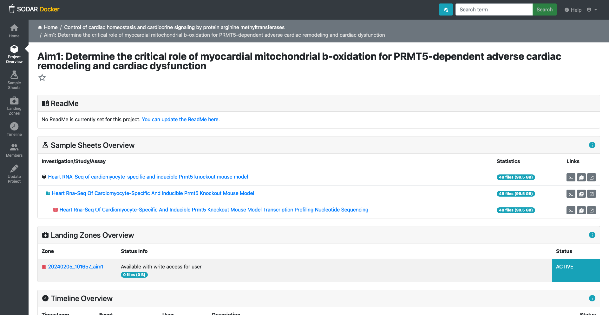

Content from Preamble to Data Management Plan
Last updated on 2024-03-22 | Edit this page
Estimated time: 0 minutes
Overview
Questions
- None
Objectives
- What is Metadata?
- What is the differentiate between data and metadata.
- Data management and metadata standardization.
- Understanding its importance in OMICs experiments.
Introduction
In this lesson, we will learn about metadata and its importance in data analysis. We will learn about the different types of metadata and how it is used to provide context and meaning to data. We will also learn about the importance of metadata standardization and how it can help to improve data management and data analysis. Finally, we will learn about the importance of metadata in OMICs experiments and how it can help to improve the reproducibility and reliability of research results.
What is Metadata?
Metadata is data that provides information about other data. It is an essential component of any data analysis pipeline. It is used to describe the content, quality, condition, and other characteristics of data. Metadata is used to provide context and meaning to data. It is used to help users understand the data and to help them make informed decisions about how to use it.
Data vs. Metadata
Data is the raw information that is collected and analyzed in a research study. It is the information that is used to answer research questions and to make decisions. Metadata is the information that describes the data. It is the information that provides context and meaning to the data. It is used to help users understand the data and to help them make informed decisions about how to use it.
An every day analogy is digital photography. Every time you take a photo with a digital camera, a range of “behind-the-scenes” information is saved along with the image data. This is known as metadata, and it can include details of the camera, lens and shooting settings used, plus optional information about the photographer, location and more.
Data Management and Metadata Standardization
Metadata standardization is the process of defining and implementing a set of rules and guidelines for the creation, management, and use of metadata. It is used to ensure that metadata is reliable. It is used to help users find, access, and use data more effectively.
Content from Primer in Bioinformatics
Last updated on 2024-03-22 | Edit this page
Estimated time: 0 minutes
Overview
Questions
- None.
Objectives
- Introduce the idea of OMICs and explain why they are important in bioinformatics.
- Familiarize with commonly used file formats
- Understanding the multilayered nature of metadata from OMICs experiments.
Introduction: OMICs technologies provide unbiased measurements of molecular entities in biological samples. These measurements allow for a comprehensive exploration of functions and association of such entities. The extensive utilization of OMICs techniques resulted in the establishment of system biology, a branch of biology that aims to comprehend biological systems in their entirety.
OMICs is a collective term for a group of technologies that allow for the comprehensive analysis of biological molecules. These technologies include genomics, transcriptomics, proteomics, metabolomics, and lipidomics. Each of these technologies provides a unique perspective on the molecular composition of a biological sample, and together they allow for a comprehensive exploration of the functions and associations of biological molecules.
General definition
- Genomics: Study of an organism’s entire genome, exome or selected regions, offering insights into genetic variations. When associated with disease phenotype or clinical data can be implicated on health and disease.
- Transcriptomics: Focuses on the transcriptome, the complete set of RNA transcripts produced by the genome, under specific circumstances or in a specific cell.
- Proteomics: Examines the proteome, the entire set of proteins produced or modified by an organism, revealing functions and pathways.
- Metabolomics: Involves the study of metabolites, providing a snapshot of the physiological condition of a cell or organism.
- Lipidomics: A complete lipid profile within a cell, tissue, or organism, allowing the study of their roles in cellular processes.
File formats
There are a multitude of file formats used in bioinformatics, each with its own specific use case. Some of the most commonly used file formats include:
FASTQ format is a text-based format for storing both an oligonucleotide sequence and its corresponding quality scores. Obtained after base calling.
SAM/BAM/CRAM files: These are used to store sequence alignment data, and are used to represent the alignment of reads to a reference genome. SAM is a text-based format, while BAM is a binary version of the same format. CRAM is a compressed version of the BAM format.
PRIDE XML, mzIdentML, mzTab, and mzML: These file formats are used to store, process, and visualize mass spectrometry-based proteomics data deposited in the PRIDE Archive. PRIDE XML is the internal data format and submission format of PRIDE, while mzIdentML and mzTab are standard file formats for reporting peptide/protein identification and quantification results. Additionally, mzML is used to store the raw output files from mass spectrometers. Note that there are many different file formats for raw proteomics datasets, depending on the equipment vendor.
Raw sequencing formats: high-throughput machine such as Illumina, Nanopore, produce files before base calling. These files are in the form of binary files, and are not human-readable and depend on vendor-specific methods for signal processing.
For bioinformatics workflow, the FASTQ format is often the initial step. This file format stores “reads”, or nucleotide sequences, along with their quality scores. Each sequence in a FASTQ file is represented by four lines: a header with a ‘@’ symbol followed by an identifier and optional description, the nucleotide sequence itself, a separator line starting with a ‘+’, and the quality scores encoded as ASCII characters. This structure allows for efficient storage and analysis of sequencing data, essential for tasks like genome assembly and analysis. For more detailed information, please visit the Wikipedia page on FASTQ format.
It is out of the scope of this lesson to detail all file formats used in bioinformatics, but it is important to understand that the different files a specific purpose, can be vendor-specific and that the choice of file format can have a significant impact on the downstream analysis of the data. For example, use of legacy vendor-specific format can limit the use of the data in modern bioinformatics pipelines, as proprietary programs may disappear. In general, it’s good practice to use open-source file formats.
Challenges in OMICs data:
There are many challenges involved in the use of OMICs datasets.
- Data storage: OMICs datasets can be large, and require robust data storage and backup solutions. This is especially true for raw sequencing data, which can be many gigabytes in size. We expect the size of OMICs datasets to predict by the CRC to be in the order of 20 terabytes per year.
- Data analysis: OMICs datasets are complex, and require specialized methods for analysis.
- Standardization: As there are many different file formats, there are many data standards and protocols used in OMICs research. This lack of standardization make it difficult to compare data between different labs.
- Ethical considerations: Handling of personal OMICs data requires careful consideration of ethical and legal issues, such as patient privacy and data sharing.
- Data sharing: OMICs datasets are required to be shared upon publication.
All the challenges can be mitigated through metadata use. Metadata is data that provides information about other data, or in other words, a detailed description of the data’s attribute. For example, for the data sharing challenge mentioned above, metadata can be used to find and filter datasets. This use-case is also interesting from the method development standpoint, as new methods can be used to analyze old data, but only if the data was properly described in terms of provenance and metadata. Metadata is essential for understanding the context of the data, and is used to help find and interpret the data. In the context of OMICs data, metadata can include information about the sample donor, sample, the experimental conditions, the data collection methods, protocols and the data analysis methods. Metadata is essential for reproducibility, as it allows others to understand and replicate the results of an experiment.
Content from fair_principles
Last updated on 2024-03-22 | Edit this page
Estimated time: 12 minutes
Overview
Questions
- None
Objectives
- Explain how metadata plays a pivotal role in making data FAIR
- Findable: Metadata helps in uniquely identifying data for easy discovery.
- Accessible: Metadata includes information on how data can be accessed.
- Interoperable: Standardized metadata ensures that data can be integrated with other datasets.
- Reusable: Metadata provides the information necessary for data to be reused effectively, including the conditions under which it can be reused.
This is a lesson created via The Carpentries Workbench. It is written
in Pandoc-flavored Markdown
for static files (with extension .md) and R Markdown for dynamic files
that can render code into output (with extension .Rmd).
Please refer to the Introduction to The
Carpentries Workbench for full documentation.
What you need to know is that there are three sections required for a valid Carpentries lesson template:
-
questionsare displayed at the beginning of the episode to prime the learner for the content. -
objectivesare the learning objectives for an episode displayed with the questions. -
keypointsare displayed at the end of the episode to reinforce the objectives.
Inline instructor notes can help inform instructors of timing challenges associated with the lessons. They appear in the “Instructor View”
OUTPUT
[1] "This new lesson looks good"You can add a line with at least three colons and a
solution tag.
Figures
You can include figures generated from R Markdown:
R
pie(
c(Sky = 78, "Sunny side of pyramid" = 17, "Shady side of pyramid" = 5),
init.angle = 315,
col = c("deepskyblue", "yellow", "yellow3"),
border = FALSE
)

Or you can use pandoc markdown for static figures with the following syntax:
{alt='alt text for accessibility purposes'}
Math
One of our episodes contains \(\LaTeX\) equations when describing how to create dynamic reports with {knitr}, so we now use mathjax to describe this:
$\alpha = \dfrac{1}{(1 - \beta)^2}$ becomes: \(\alpha = \dfrac{1}{(1 - \beta)^2}\)
Cool, right?
Content from SODAR: System for Omics Data Access and Retrieval.
Last updated on 2024-03-22 | Edit this page
Estimated time: 0 minutes
Overview
Questions
- None
Objectives
- Introduces SODAR
- Detail on main concepts of the tool
- How to use SODAR
Overview
 System for
Omics Data Access and
Retrieval (SODAR) is a specialized
system designed for managing data in OMICs research projects. The
platform provides medical experts with a central location for navigating
and coordinating data, connecting to other resources and systems. Key
features of SODAR include project-based access control, modeling study
design metadata, large-scale data storage, file validation, and various
tools for data management. SODAR aims to address challenges faced by
scientists working on OMICs studies by offering a user-friendly
interface for managing multi-assay studies and organizing raw dataset,
metadata and results in a single place. Most end users will use SODAR
via its web-based GUI, while data stewards will use the REST APIs. SODAR
server runs on the Django web server, models metadata with the ISA
specification, and uses iRODS for file storage. SODAR is developed by
the Core Unit
Bioinformatics at the Berlin
Institute of Health. The software is written in Python 3 and freely
available under the MIT license.
System for
Omics Data Access and
Retrieval (SODAR) is a specialized
system designed for managing data in OMICs research projects. The
platform provides medical experts with a central location for navigating
and coordinating data, connecting to other resources and systems. Key
features of SODAR include project-based access control, modeling study
design metadata, large-scale data storage, file validation, and various
tools for data management. SODAR aims to address challenges faced by
scientists working on OMICs studies by offering a user-friendly
interface for managing multi-assay studies and organizing raw dataset,
metadata and results in a single place. Most end users will use SODAR
via its web-based GUI, while data stewards will use the REST APIs. SODAR
server runs on the Django web server, models metadata with the ISA
specification, and uses iRODS for file storage. SODAR is developed by
the Core Unit
Bioinformatics at the Berlin
Institute of Health. The software is written in Python 3 and freely
available under the MIT license.
SODAR components and data workflow
 Figure 1. Overview of data
workflow with SODAR. The next sections will detail each component.
Figure 1. Overview of data
workflow with SODAR. The next sections will detail each component.
SODAR server
The SODAR server is the main component of the system. It comprises several modules called Django apps, which are responsible for different tasks. Although these apps are not the utmost importance for the users, understanding the available apps allows users to understand the full potential of the system. The main apps are detailed in the [GitHub repository][https://github.com/bihealth/sodar-server?tab=readme-ov-file#technical-information] of the project and listed below:
- Samplesheets: Modeling of study metadata in the ISA-Tab format
- Landingzones: Management of file validation and uploads into iRODS
- Irodsadmin: iRODS data administration helpers
- Irodsbackend: Backend app for iRODS queries and operations
- Irodsinfo: Display iRODS server information and create user configurations
- Ontologyaccess: Parse, store and serve ontologies for local lookup
- Taskflowbackend: Run iRODS transactions with full rollback for project and file operations
The combinations of these apps allow the SODAR server results the following webpage:
 Figure 2: SODAR developers
provide a demo instance at this
url.
Figure 2: SODAR developers
provide a demo instance at this
url.
iRODS server
iRODS stands for Integrated Rule-Oriented Data System, is the data management system that powers SODAR data and metadata management under-the-hood. Most user will not need to interact with iRODS directly. iRODS provides storage virtualization among heterogeneous file systems, meaning it allows data to be stored in different computers or external servers (‘cloud’) and still be systematic organized in terms of metadata. The usual use case is for organizing unstructured data, such OMICs experiments.
The iCAT server serves as a metadata catalog that supports large facility experimental data, linking all aspects of the research chain from proposal through to publication. It utilizes a relational database for storing metadata in the form of “triples,” consisting of an attribute field, a value field, and a unit field.
An iRODS collection is a fundamental concept in iRODS that organizes data objects into a hierarchical structure. In iRODS, collections are similar to subdirectories and are used to group related data objects together. These collections do not reference the physical storage path (i.e., where the data is stored in the file system), allowing data objects within the same collection to be stored in different physical locations. Additionally, a data object in iRODS can have multiple replicas, which are exact copies of the file stored in different locations2
IRODs server has many features that are beyond the scope of this material.
SODAR naming and concepts
 Figure 3. SODAR project overview page.
Web-UI
SODAR web-UI is the main interface for users to interact with the system.
Navigation Sidebar: On the left side, there’s a vertical navigation bar with various options such as “Project Overview”, and once a project is selected, “Sample Sheets”, “Landing Zones”, “Timeline,” and “Members.”
Navigation Topbar: A search bar, enable project or metadata search. Manual,a link to the SODAR documentation. User menu drop-down so users access configurations and general information.
Main Panel: The bulk of the UI consists of the main panel, which changes depending on the section.
Members:
Members is a core feature for each project. This section provides an overview of user roles within a project, determining their level of access and capabilities. Users can be assigned various roles like Owner, Delegate, Contributor, Guest, and Finder, each with specific rights, from full project management to read-only access. Roles can be inherited from parent categories and can be adjusted to the needs of the current project. Owners and Delegates have the ability to add, update, or remove members and roles. Members are added through a user search function, and changes in membership are recorded in the project’s timeline. For users not registered in SODAR, invitations can be sent via email, which expire after a set duration. The system allows for the promotion of members with inherited roles, but not demotion. Each project must have one local owner, and the number of contributors and guests is unrestricted.
Detailed information are detailed on SODAR manual.
Landing Zones:
Landing zones in SODAR serve as temporary, user-specific areas within iRODS for file uploads, providing full write access to the user. Files are uploaded to these landing zones, after which SODAR performs validation and transfers them to a permanent, read-only sample data repository. The Landing Zones application facilitates the management of these uploads, accessible through the project sidebar or the SODAR home page. Should validation or upload fail, the process is reversed to allow corrections, ensuring the integrity of data in the repository.
Sample sheets:
In SODAR, sample sheets represent the metadata for study design within research projects. The Sample Sheets application is used for importing, browsing, and editing this metadata, and it allows users to access related files stored in the iRODS system. Access to the Sample Sheets app is obtained through the project sidebar or via an icon on the SODAR home page.
Time line:
The Timeline application in SODAR serves as a log that tracks project activities, such as member role assignments, file transfers from landing zones, updates to sample sheets or errors. Each recorded event on the timeline includes a timestamp, the type and origin of the event, the user who initiated it, and a detailed description with links to related objects and applications.
SODAR data workflow step-by-step usage
Figure 4. SODAR data workflow.
Create a project https://sodar-test.dieterichlab.org/project/project/create
Create a subproject https://sodar-test.dieterichlab.org/project/project/create/<project_uid>
-
Create a sample sheet: Sample sheets > Sheet operations > Create from template
- Select ISA-Tab Template (Bulk RNA sequencing ISA-tab template)
- Import Sample Sheets from ISA-Tab
Activate the irods server on Sample Sheet section
-
Upload files
Use <cubi-tk sodar ingest> cubi-tk sodar ingest –sodar-url
–sodar-api-token Use iRODs <iput>
Call SODAR validation
FAQ and pratical notes:
How to access iRODS:
iRODS directories can be accessed . https://sodar-server.readthedocs.io/en/latest/data_transfer_irods.html
Why <cubi-tk sodar ingest-fasq> is not working?
The cubi-tk is a command line tool that allows to interact with SODAR
server. The command cubi-tk sodar ingest-fasq because of
configuration error. Use <cubi-tk sodar ingest>. See
implementation details on cubi-tk.
? URL for sheet synchronization
? iRODS public access ticket
? IGV session genome
Content from Data Management Plan
Last updated on 2024-03-22 | Edit this page
Estimated time: 0 minutes
Overview
Questions
- None
Objectives
- Establishing a data management strategy within the CRC.
- Detailing roles and responsibilities for data management.
Overview
This Data Management Plan outlines the strategies and procedures for managing high-throughput data within the CRC1550’s integrated infrastructure. The CRC-INF plan is centered on the consolidation of interfaces, procedures, and interoperability standards (Aim 1) and the development of generic bioinformatics workflows for the standard analysis of multimodal data sets from CRC projects (Aim 2). The primary objective of the data management team is to ensure the efficient management of unprocessed and processed data produced by high-throughput experiments by providing services (and interfaces) to manage and store data and metadata.

The data generated in high-throughput experiments can be categorized into two main types:
Unprocessed (or raw) data refers to the unprocessed data directly obtained from high-throughput experiments. This includes the output from sequencing machines. The data management team will establish protocols for the collection, storage, and initial processing of raw data to ensure its integrity and reliability. There is a general rule of thumb for
Processed data represents the results obtained after applying various bioinformatics and statistical analysis techniques to the raw data. This includes sequences filtered by quality, identified genetic variants, and derived annotations, such as genes called differentially expressed. The data management team will work closely with the bioinformatics team to establish workflows and standardize processing methods to ensure consistent and reproducible results.
Roles and responsibilities
The data owner and data manager must work together to ensure data flow, documentation, and data management best practices throughout the project. To keep high-throughput data secure, accessible, and usable, these roles must communicate regularly.
Data Owner:
High-throughput experiment data transfer: The data owner transfers primary data from high-throughput experiments to the data management team. This includes organizing and documenting data.
Access control change communication: The data owner should notify the infrastructure management team of access control changes. This ensures project-compliant access permissions.
In case of record update: The data owner must keep data and metadata up-to-date. Throughout the project lifecycle, document data and metadata changes. Data integrity and completeness should be ensured by the data owner and manager.
Data Manager:
Validates high-throughput data and metadata, this involves checking the data owner’s metadata for MINSEQE and ISA compliance, inconsistencies, and missing information.
Storage and Backup. The data manager stores and backs up raw data, processed data, and metadata. To preserve data and recover from disasters, this requires proper storage systems, data organization, and regular backups.
Maintain a healthy data management system. This includes system monitoring, troubleshooting, and updating software and security patches.
The data manager transfers data and metadata from the data management system to bioinformatics teams or other stakeholders. This may involve exporting data in required formats, ensuring data integrity during transfer, and working with bioinformatics teams to meet their needs.
Managing metadata
To enable the unambiguous interpretation and facilitate the reproducibility of experiment results, we will adopt the Minimum Information about a high-throughput nucleotide SEQuencing Experiment (MINSEQE) guidelines. These guidelines provide a framework for capturing essential metadata associated with high-throughput experiments and are the recommended community standard. Similar to the MIAME guidelines for microarray experiments, MINSEQE will be followed to ensure comprehensive metadata collection and consists of the following items:
metadata
sequence read data
final processed data
experimental protocols
ISA framework: this framework aims to simplify
Investigation: the project context
Study: a unit of research
Assay: analytical measurement
Data Portal
Task: provide granularity access control to certain data. Initially, data is available only to data owners. After authorization, data should be made internally and openly accessible.
Making metadata interoperable
Task: To enhance the interoperability of metadata, the data management team will utilize standardized metadata formats, such as XML or JSON, and adopt controlled vocabularies and ontologies where applicable. This will enable efficient data discovery, integration, and sharing across different projects and platforms.
Data security and backup
Task: we will establish protocols for data security and backup to ensure that data is protected against loss or corruption. The protocols will include measures for data backup.
Ethical aspect
Currently, we only store data obtained from animal samples for genetic and disease modeling. Therefore, there are no ethical or legal issues that can affect data sharing, assuming a vote on animal ethics has been obtained by the data provider.
Costs
The data management team will allocate appropriate resources, including storage infrastructure, computational power, and personnel, to support the storage and metadata processing. Regular assessments will be conducted to ensure the scalability and sustainability of the infrastructure and its services.
OpenBis
To fulfill these tasks, we are using the Biological Information System (OpenBIS), a flexible and extensible data management system that can be utilized to accomplish several aspects of your Data Management Plan. Here’s how OpenBIS can be used to support the different sections:
OpenBIS includes a web-based interface that can serve as a data portal. It allows authorized users to search, browse, and access data and metadata stored in the system. As a metadata management system, it provided a structured metadata model. We are working to define metadata templates based on the MINSEQE guidelines and the ISA framework within OpenBIS. This ensures that the required metadata fields are captured for each experiment, study, and assay. In addition, metadata quality checklist should be implemented
The data portal can be customized to provide specific functionalities for data visualization and analysis, enabling users to perform basic data exploration tasks.
The portal supports access control mechanisms, allowing us to define user roles and permissions. We can configure access restrictions to ensure that consortium members have the appropriate level of access to data and metadata within the system. OpenBIS enables collaboration by providing controlled sharing and collaboration features among authorized users. In addition, OpenBIS can integrate with public repositories that work as external data sharing platforms, such as Zenodo, that generate persistent identifiers (e.g., DOI) for datasets, facilitating easy referencing and citation.
OpenBIS includes built-in security features to protect data integrity and confidentiality. It supports user authentication and authorization, data encryption, and audit trails to track system activities. Additionally, OpenBIS can be integrated with backup systems to ensure regular data backups and disaster recovery.
Content from SRA
Last updated on 2024-03-22 | Edit this page
Estimated time: 12 minutes
Overview
Questions
- What is SRA and how to use it for data deposition?
Objectives
- Get to know the SRA database
- Understand the requiriments for data deposition
Introduction
The Sequence Read Archive is a public repository that contains high-throughput sequencing data. It is a part of the International Nucleotide Sequence Database Collaboration (INSDC), which includes several institutes. Data from all life forms is included in the repository, as well as metagenomics and ecological studies. SRA stores raw sequencing data and alignment. We use the SRA to deposit, which is usually mandatory as part of a paper publication.
It aims to establish a central repository for next-generation sequencing data, linking to resources that reference or utilize this data. The repository allows in tracking project metadata for studies and experiments. There’s a focus on facilitating flexible submission and retrieval of ancillary data providing normalized data structures. Additionally, the objectives include decoupling the submission process from content and laying the groundwork for interactive user submissions and data retrieval.
SRA concepts:
SRA metadata concept separates experimental data from its metadata, organizing the latter into a structured hierarchy:
— Study: Represents a collection of experiments aimed towards a common goal, serving as an overarching project that encapsulates the purpose and scope of the research conducted. — Experiment: Refers to a specific set of laboratory procedures applied to input material, designed to achieve an anticipated result. Each experiment is a component of a study, contributing to its overall objective. Can also be interpreted as a series of experimental protocols. — Sample: The focus of an experiment, which can be a single sample or multiple samples grouped together. The results of an experiment are articulated based on these samples, detailing the outcomes for individual samples or their collective as defined by the experimental setup. Sample are not equal a individuals, as one individual can provide multiple samples (i,e, right and left ventricle). — Run: Denotes the actual outcomes or results of the experiment. These runs encompass the data collected from a sample or a group of samples linked to a specific experiment. Or simply the the output of the research process. — Submission: A submission encompasses a bundle of metadata and data objects, coupled with instructions on how the submission should be handled. This package facilitates the organized and controlled entry of both experimental data and its corresponding metadata into the repository, ensuring that the data can be accurately classified, accessed, and utilized.
Understanding these concepts and the structure of the organization is important for providing detailed yet direct metadata on data on the various steps involved in generating a data set.
Accessing the SRA
The SRA database can be accessed through the NCBI website.
Although discussing data access is outside the scope of this material, it is important to note that data access is a key aspect of the FAIR principles. This means that with the right metadata, data can be reused, generating more follow-up studies and citations.
Significant to note that not all data on the SRA is public, some data is private and only accessible to the submitter. Data can also be embargoed for a certain period of time. Recently, SRA started to use placeholder as a way to keep track of data produced by large cohort and require controlled access.
Data deposition
There multiple ways to deposit data on the SRA, the most common is through the submission portal. This approach is detailed here. At the CRC, we plan to streamline this process using a programmatic approach for data submission, as detailed here.
Key Points
Comprehensive Repository: The SRA serves as a comprehensive public repository for high-throughput sequencing data across all life forms, supporting a wide range of genomic research by providing access to raw sequencing data and alignments.
Structured Metadata Organization: The organization of SRA metadata into a structured hierarchy—comprising Studies, Experiments, Samples, Runs, and Submissions—facilitates precise and efficient data deposition, retrieval, and analysis, underscoring the importance of detailed metadata in the scientific research process.
Access and Deposition Flexibility: While access to the SRA database is facilitated through the NCBI website, the database also highlights the principles of controlled access and privacy for certain data sets, alongside offering multiple pathways for data deposition to accommodate the needs of diverse research projects and goals.